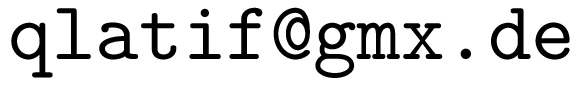

Dr. Qaisar Latif
I am a mathematician with formal training in functional anaylsis and complex analytic geometry. Specifically, I have been interested in the past in
- eigenvalue distribution of nuclear operators, existence of the trace formulas for them and approximation property.
- pseudoconcavity of flag domains.
My current fields of interest are: computational mathematics, machine learning and data science.
I am passionate about bicycle riding, nonfiction reading and photography.
If you want to contact me, please direct your emails to the following address.

Qualifications
- PhD Mathematics (2017)
- Thesis: On the Pseudoconcavity of Flag Domains
PhD Supervisor: Prof. Alan Huckleberry
Jacobs University Bremen, Germany - PhD Mathematics (2015)
- Thesis: Approximation properties and eigenvalue problems for Banach spaces
PhD Supervisor: Prof. Oleg Reinov
Abdus Salam School of Mathematical Sciences Lahore, Pakistan - MSc Applied Mathematics (2009)
- University of the Punjab Lahore, Pakistan
- BSc Mathematics & Physics (2007)
- University of the Punjab Lahore, Pakistan
Research Interests
Complex Analysis in Several Variables, Geometry of Flag Domains, Levi Geometry, Geometry of Banach Spaces, Operator Theory
Research Articles
- Pseudoconcavity of Flag Domains: The Method of Boundary Supporting Cycles, Math. Ann. pp. 1–15, 2018, (with A. Huckleberry, T. Hayama)
- On the Pseudoconcavity of Flag Domains, PhD thesis 2017/29, Jacobs University Library, 2017|
- Approximation Properties and Eigenvalue Problems for Banach Spaces, PhD thesis, Abdus Salam School of Mathematical Sciences GC University Lahore, Pakistan, 2015
- Sur valeures propres des opérateurs \((r,p)\)-nucléaires et conditions d’approximation d’ordre \((r,p)\), Spb. Math. Society 2014, Preprint, (with O. Reinov)
- Distribution of Eigenvalues of Nuclear Operators and Grothendieck-Lidskij Type Formulas, Journal of Mathematical Sciences 193, No. 2, pp. 312–329, 2013, (with O. Reinov)
- Grothendieck-Lidskij Theorem for Subspaces of Quotients of \(L_p\)-Spaces, Banach Center Publications, vol. 102, Institute of Mathematics, Polish Academy of Science Warszawa, pp. 189–195, 2014, (with O. Reinov)
- On Grothendieck-Liskij Trace Formulas and Applications to Approximation Properties, Journal of Prime Research in Mathematics, vol. 9, 2013
- Grothendieck-Lidskij Theorem for Subspaces of \(L_p\) Spaces, Math. Nachr. vol. 286, No. 2–3, pp. 279–282, 2013, (with O. Reinov)
- Banach Spaces Without Approximation Properties of Type \(p\), Mathematical Notes, vol. 88, No. 4, Springer, Berlin, 559–562, 2010, (with O. Reinov)
Reviews of Articles
- Górka, Przemysław; Póspiech, Paweł. Banach Function Spaces on Locally Compact Groups, Ann. Funt. Anal., 10(4), 2019, 460–471. MR4026360. Reviewed for AMS Mathematical Reviews.
Teaching (Old)
- Calculus and Linear Algebra for Graduate Students
- Jacobs University Bremen
2020 Fall - Introductory Algebra
- Jacobs University Bremen
2020 Fall - Mathematics for Engineering & Sciences
- Jacobs University Bremen
2019 Spring - Introductory Complex Analysis
- (assisting Prof. Alan Huckleberry)
Jacobs University Bremen
2018 Fall - Calculus on Manifolds
- (assisting Dr. Keivan Malahi-Karai)
Jacobs University Bremen
2018 Fall - Mathematics for Engineering & Sciences
- Jacobs University Bremen
2018 Spring - Foundations of Mathematics
- Jacobs University Bremen
2017 Fall - Advanced Business Mathematics
- Jacobs University Bremen
2017 Fall - Advanced Business Mathematics
- Jacobs University Bremen
2016 Fall - Advanced Business Mathematics
- Jacobs University Bremen
2015 Fall - Mathematics for Logistics & Economy
- Jacobs University Bremen
2015 Spring - Topics in Analysis (seminar course)
- Abdus Salam School of Mathematical Sciences Lahore, Pakistan
2014 Feb
Scientific Computation Skills
Python, C++, Common Lisp, Awk, Maxima (CAS)
Computer Skills
GNU/Linux, Emacs, Org Mode, LaTeX